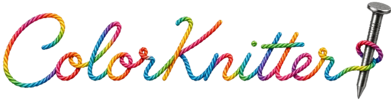

<!DOCTYPE html>
<html lang="ru">
<head>
  <meta charset="UTF-8" />
  <meta name="viewport" content="width=device-width, initial-scale=1.0, user-scalable=no" />
  <title>ColorKnitter</title>
  <link rel="manifest" href="manifest.json" />
  <meta name="theme-color" content="#0a0a0a" />
  <link rel="icon" href="img/icon-192.png" />
  <link rel="apple-touch-icon" href="img/icon-192.png" />
  <meta name="apple-mobile-web-app-capable" content="yes" />
  <meta name="apple-mobile-web-app-status-bar-style" content="black" />
  <meta name="apple-mobile-web-app-title" content="ColorKnitter" />
  <link rel="stylesheet" href="css/common.css" />
  <link rel="stylesheet" href="css/knitter.css" />
  <script src="js/pwa.js"></script>
  <script src="js/knitter-boot.js"></script>
</head>
<body>
<div id="root"></div>

<script src="https://cdnjs.cloudflare.com/ajax/libs/react/18.2.0/umd/react.production.min.js"></script>
<script src="https://cdnjs.cloudflare.com/ajax/libs/react-dom/18.2.0/umd/react-dom.production.min.js"></script>
<script src="https://cdnjs.cloudflare.com/ajax/libs/babel-standalone/7.23.2/babel.min.js"></script>
<!-- Приложение вязалки (React). Код лежит прямо здесь, чтобы страница работала и без сервера -->
<script type="text/babel">
const { useState, useEffect, useRef } = React;
const STORAGE_KEY = 'ck_state_v1';
const SPEEDS = [0.5, 0.75, 1, 1.25, 2];

function saveToStorage(data) {
  // Пробуем сохранить с фото
  try { localStorage.setItem(STORAGE_KEY, JSON.stringify(data)); return; } catch(e) {}
  // Если не влезло — сжимаем фото
  if (data.circleImage) {
    try {
      const img = new Image();
      img.src = data.circleImage;
      const c = document.createElement('canvas');
      c.width = 400; c.height = 400;
      c.getContext('2d').drawImage(img, 0, 0, 400, 400);
      const compressed = c.toDataURL('image/jpeg', 0.5);
      localStorage.setItem(STORAGE_KEY, JSON.stringify({...data, circleImage: compressed}));
      return;
    } catch(e) {}
  }
  // Совсем не влезло — сохраняем без фото
  try { localStorage.setItem(STORAGE_KEY, JSON.stringify({...data, circleImage: null})); } catch(_) {}
}
// Число гвоздей: кратно 4 (четыре сектора), по умолчанию 260
function normalizeNails(n) {
  n = Math.round(Number(n));
  return Number.isFinite(n) && n >= 8 && n <= 2000 && n % 4 === 0 ? n : 260;
}
// Цвет доски [r, g, b], по умолчанию белая
function normalizeBoard(b) {
  return Array.isArray(b) && b.length === 3 && b.every(v => Number.isFinite(v) && v >= 0 && v <= 255) ? b : [255, 255, 255];
}
// Номер шага всегда должен быть внутри схемы
function clampIndex(i, len) {
  if (!Number.isInteger(i) || len <= 0) return 0;
  return Math.min(Math.max(i, 0), len - 1);
}

// Приводит шаги к одному формату {value, color:[r,g,b], isColorChange}.
// Защищает от сохранений старых версий и данных в другом формате.
function normalizeSequence(seq) {
  if (!Array.isArray(seq)) return [];
  const out = [], lastByColor = new Map();
  for (const item of seq) {
    const isObj = item !== null && typeof item === 'object';
    const value = Number(isObj ? item.value : item);
    if (!Number.isFinite(value) || value < 1) continue;
    const c = isObj ? item.color : null;
    const color = Array.isArray(c) && c.length === 3 && c.every(Number.isFinite) ? c : [0, 0, 0];
    const prev = out[out.length - 1];
    const isColorChange = prev ? !prev.color.every((v, i) => v === color[i]) : false;
    // откуда идёт нить к этому гвоздю: прошлый гвоздь той же нити (у каждого цвета свой путь)
    const key = color.join(',');
    const from = lastByColor.has(key) ? lastByColor.get(key) : null;
    lastByColor.set(key, value);
    out.push({ value, color, isColorChange, from });
  }
  return out;
}

function loadFromStorage() {
  try {
    const s = localStorage.getItem(STORAGE_KEY);
    if (!s) return null;
    const d = JSON.parse(s);
    if (!d || typeof d !== 'object') return null;
    d.sequence = normalizeSequence(d.sequence);
    d.currentIndex = clampIndex(d.currentIndex, d.sequence.length);
    if (!Array.isArray(d.savedStates)) d.savedStates = [];
    d.nails = normalizeNails(d.nails);
    d.board = normalizeBoard(d.board);
    return d;
  } catch(_) { return null; }
}

function ColorKnitter() {
  const [restored] = useState(loadFromStorage);

  const [sequence, setSequence]               = useState(restored?.sequence || []);
  const [currentIndex, setCurrentIndex]       = useState(restored?.currentIndex || 0);
  const [isPlaying, setIsPlaying]             = useState(false);
  const [speedMultiplier, setSpeedMultiplier] = useState(restored?.speedMultiplier || 1);
  const [targetSteps, setTargetSteps]         = useState(restored?.targetSteps || 0);
  const [findStep, setFindStep]               = useState(restored?.findStep || 1);
  // Черновики полей «Цель» и «Перейти к шагу»: пока пользователь печатает, храним текст как есть
  const [targetDraft, setTargetDraft] = useState(null);
  const [findDraft, setFindDraft]     = useState(null);
  const findPendingRef = useRef(null), findTimerRef = useRef(null);
  // Поиск «где я остановился» по последним гвоздям
  const [posQuery, setPosQuery]   = useState('');
  const [posResult, setPosResult] = useState(null);
  const [savedStates, setSavedStates]         = useState(restored?.savedStates || []);
  const [remainingSteps, setRemainingSteps]   = useState(restored?.remainingSteps || 0);
  const [showNextLine, setShowNextLine]       = useState(restored?.showNextLine || false);
  const [circleImage, setCircleImage]         = useState(restored?.circleImage || null);
  const [imageOpacity, setImageOpacity]       = useState(restored?.imageOpacity ?? 0.55);
  const [showSettings, setShowSettings]       = useState(false);
  const [showSaved, setShowSaved]             = useState(false);
  const [radioPlaying, setRadioPlaying]       = useState(false);
  const [goalMessage, setGoalMessage]         = useState(false);

  const fileInputRef    = useRef(null);
  const imageInputRef   = useRef(null);
  const canvasRef       = useRef(null);
  const playIntervalRef = useRef(null);
  const stepCountRef    = useRef(0);
  const goalReachedRef  = useRef(false);
  const loadedImgRef    = useRef(null);
  const [nails, setNailsState] = useState(restored?.nails || 260);
  const nailsRef = useRef(restored?.nails || 260);
  const setNails = (n) => { nailsRef.current = n; setNailsState(n); };
  const [board, setBoard] = useState(restored?.board || [255, 255, 255]);
  const [imgTick, setImgTick] = useState(0);
  // Подложка из сохранения: после перезагрузки картинку нужно загрузить заново
  useEffect(() => {
    if (!circleImage || (loadedImgRef.current && loadedImgRef.current.src === circleImage)) return;
    const img = new Image();
    img.onload = () => { loadedImgRef.current = img; setImgTick(t => t + 1); };
    img.src = circleImage;
  }, [circleImage]);
  const sequenceRef     = useRef(sequence);
  const audioRef        = useRef(null);
  sequenceRef.current   = sequence;

  useEffect(() => {
    audioRef.current = new Audio('https://pianosolo.streamguys1.com/live?listenerid=8b5691fb9de68c165068d33274d23ef1&awparams=companionAds%3Atrue&aw_0_req.gdpr=true&us_privacy=1YNN');
    audioRef.current.volume = 0.2;
    return () => { audioRef.current.pause(); };
  }, []);

  useEffect(() => {
    if (!audioRef.current) return;
    if (radioPlaying) audioRef.current.play().catch(()=>{});
    else audioRef.current.pause();
  }, [radioPlaying]);

  // Проверяем данные от генератора
  useEffect(() => {
    const fromGen = localStorage.getItem('ck_from_generator');
    if (!fromGen) return;
    try {
      const { sequence: genSeq, colors, mode: genMode, image: imgData, nails: genNails, board: genBoard } = JSON.parse(fromGen);
      setNails(normalizeNails(genNails)); setBoard(normalizeBoard(genBoard));
      localStorage.removeItem('ck_from_generator');
      localStorage.setItem('ck_has_sequence', '1');

      if (genSeq && genSeq.length > 0) {
        let prevColor = null;
        const seq = genSeq.map((item) => {
          // Поддерживаем оба формата: старый (число) и новый ({nail, colorIndex})
          const nailIdx = (typeof item === 'object' && item !== null) ? item.nail : item;
          const colorIdx = (typeof item === 'object' && item !== null) ? (item.colorIndex ?? 3) : 3;
          // Получаем цвет нити из данных генератора
          const colorDef = colors ? colors[colorIdx] : null;
          const color = colorDef ? colorDef.rgb : [0, 0, 0];
          const value = nailIdx + 1; // 0-based → 1-based
          const isColorChange = prevColor ? !prevColor.every((c, ci) => c === color[ci]) : false;
          prevColor = color;
          return { value, color, isColorChange };
        });
        const cleanSeq = normalizeSequence(seq);
        setSequence(cleanSeq);
        setCurrentIndex(0);
        setRemainingSteps(0);
        stepCountRef.current = 0;
        goalReachedRef.current = false;
        speak(cleanSeq[0]);
      }

      // Загружаем картинку как подложку
      if (imgData) {
        const img = new Image();
        img.onload = () => { loadedImgRef.current = img; setCircleImage(imgData); };
        img.src = imgData;
      }
    } catch(e) { console.error('Ошибка загрузки из генератора:', e); }
  }, []);

  useEffect(() => {
    saveToStorage({ sequence, currentIndex, speedMultiplier, targetSteps, findStep,
      savedStates, remainingSteps, showNextLine, circleImage, imageOpacity, nails, board });
  }, [sequence, currentIndex, speedMultiplier, targetSteps, findStep,
      savedStates, remainingSteps, showNextLine, circleImage, imageOpacity, nails, board]);

  const fmt = (s) => {
    const h = Math.floor(s/3600), m = Math.floor((s%3600)/60), sc = s%60;
    return `${String(h).padStart(2,'0')}:${String(m).padStart(2,'0')}:${String(sc).padStart(2,'0')}`;
  };

  const calcElapsed = () => Math.round(currentIndex * (6 - speedMultiplier) / 1.1);

  const moveSteps = (steps) => {
    setCurrentIndex(prev => {
      const next = Math.max(0, Math.min(sequenceRef.current.length-1, prev+steps));
      speak(sequenceRef.current[next]);
      return next;
    });
  };

  useEffect(() => {
    const onKey = (e) => {
      if (!sequenceRef.current.length) return;
      if (e.key==='ArrowRight'&&!e.ctrlKey){e.preventDefault();moveSteps(1);}
      else if(e.key==='ArrowLeft'&&!e.ctrlKey){e.preventDefault();moveSteps(-1);}
      else if(e.key===' '){e.preventDefault();setIsPlaying(p=>!p);}
    };
    window.addEventListener('keydown', onKey);
    return () => window.removeEventListener('keydown', onKey);
  }, []);

  // Сектора D, C, A, B по четверти гвоздей (при 260 — по 65)
  const getSector = (n) => { if(!n)return''; const q=nailsRef.current/4; if(n<=q)return'D'; if(n<=2*q)return'C'; if(n<=3*q)return'A'; return'B'; };
  const getPos    = (n) => { if(!n)return 0; const q=nailsRef.current/4; const b={D:1,C:q+1,A:2*q+1,B:3*q+1}; return n-b[getSector(n)]+1; };
  const getAngle  = (sec,pos) => { const q=nailsRef.current/4; const b={A:Math.PI,B:Math.PI*1.5,C:Math.PI*0.5,D:0}; return b[sec]+(pos-1)*(Math.PI*0.5/q); };
  // Название ближайшего цвета (палитра генератора и файлов Крама)
  const NAMED_COLORS = [
    ['чёрный',[0,0,0]], ['белый',[255,255,255]], ['жёлтый',[255,220,0]], ['жёлтый',[255,255,0]],
    ['голубой',[0,183,235]], ['голубой',[0,255,255]], ['розовый',[255,0,144]], ['розовый',[255,0,255]],
    ['синий',[0,0,255]], ['красный',[220,30,30]], ['зелёный',[0,160,60]], ['оранжевый',[255,140,0]], ['коричневый',[120,70,30]]
  ];
  const colorName = (c) => {
    let best='', bd=Infinity;
    for(const [name,v] of NAMED_COLORS){ const d=(c[0]-v[0])**2+(c[1]-v[1])**2+(c[2]-v[2])**2; if(d<bd){bd=d;best=name;} }
    return best;
  };
  // «розовый» → «розовая» (нить) и «розовую» (возьмите)
  const colorFem = (c) => colorName(c).replace(/ий$/,'яя').replace(/[ыо]й$/,'ая');
  const colorAcc = (c) => colorName(c).replace(/ий$/,'юю').replace(/[ыо]й$/,'ую');
  const isMultiColor = sequence.length>1 && sequence.some(it=>it.color.some((v,k)=>v!==sequence[0].color[k]));
  const speak = (item) => {
    if(!item)return;
    const t = item.isColorChange
      ? `${colorFem(item.color)} нить, ${getSector(item.value)}${getPos(item.value)}`
      : `${getSector(item.value)}${getPos(item.value)}`;
    window.speechSynthesis.cancel();
    const u = new SpeechSynthesisUtterance(t); u.lang='ru-RU';
    window.speechSynthesis.speak(u);
  };

  // Файл ColorKnitter: «Гвоздей: N», заголовки «=== Цвет [r, g, b] ... ===», шаги «12. D5»
  const parseCK = (text) => {
    const nm=text.match(/Гвоздей:\s*(\d+)/); const n=normalizeNails(nm?+nm[1]:260), q=n/4;
    const base={D:1,C:q+1,A:2*q+1,B:3*q+1};
    let color=[0,0,0]; const items=[];
    let brd=[255,255,255];
    const bm=text.match(/доска:\s*([а-яё]+)/i);
    if(bm){ const w=bm[1].toLowerCase(); if(w.startsWith('сер'))brd=[140,140,140]; else if(w.startsWith('чёр')||w.startsWith('чер'))brd=[25,25,25]; }
    text.split('\n').forEach(raw=>{
      const line=raw.trim();
      if(line.startsWith('===')){ const m=line.match(/\[(\d+),\s*(\d+),\s*(\d+)\]/); if(m) color=[+m[1],+m[2],+m[3]]; return; }
      const m=line.match(/^\d+\.\s*([ABCD])\s*(\d+)$/i);
      if(m){ const sec=m[1].toUpperCase(), pos=+m[2]; if(pos>=1&&pos<=q) items.push({value:base[sec]+pos-1,color:[...color]}); }
    });
    return { items, nails:n, board:brd };
  };
  const parseFile = (text) => {
    if(/ColorKnitter/.test(text)&&/Гвоздей:/.test(text)) return parseCK(text);
    return { items: parseCrum(text), nails: 260, board: [255,255,255] };
  };
  const parseCrum = (text) => {
    const lines=text.split('\n'); const temp=[]; let color=[0,0,0],hasZero=false;
    lines.forEach(line=>{
      line=line.trim(); if(!line)return;
      if(line.startsWith('Thread:')){const m=line.match(/\[(\d+),\s*(\d+),\s*(\d+)\]/);if(m)color=[+m[1],+m[2],+m[3]];}
      else{
        const nums=line.split(/[\s,]+/).map(Number).filter(n=>!isNaN(n));
        if(nums.some(n=>n===0))hasZero=true;
        nums.forEach(n=>temp.push({value:hasZero?n+1:n,color:[...color],isColorChange:temp.length>0&&!temp[temp.length-1].color.every((c,i)=>c===color[i])}));
      }
    });
    return temp;
  };

  // «Цель»: пусто или 0 — без цели
  const applyTarget = (t) => {
    const v=parseInt(t,10), val=Number.isFinite(v)&&v>0?v:0;
    setTargetSteps(val); stepCountRef.current=0; setRemainingSteps(val); goalReachedRef.current=false;
  };
  // «Перейти к шагу»: только номер внутри схемы, иначе поле вернётся к прежнему значению
  const goToStep = (t) => {
    const v=parseInt(t,10), seq=sequenceRef.current;
    if(v>=1&&v<=seq.length){ setFindStep(v); setCurrentIndex(v-1); speak(seq[v-1]); }
  };

  // «D12 B30 A7» → номера гвоздей; буквы можно латиницей или кириллицей (А, В, С, Д)
  const parseNails = (text) => {
    const q=nailsRef.current/4, base={D:1,C:q+1,A:2*q+1,B:3*q+1};
    const map={'A':'A','А':'A','B':'B','В':'B','C':'C','С':'C','D':'D','Д':'D'};
    const out=[], re=/([ABCDАВСДabcdавсд])\s*(\d+)/g; let m, any=false;
    while((m=re.exec(text))){ any=true; const sec=map[m[1].toUpperCase()], pos=+m[2]; out.push(pos>=1&&pos<=q?base[sec]+pos-1:NaN); }
    if(!any) (text.match(/\d+/g)||[]).forEach(n=>{ const v=+n; out.push(v>=1&&v<=nailsRef.current?v:NaN); });
    return out;
  };
  // Ищем шаги, где эти гвозди идут подряд по одной нити (последний — самый свежий)
  const findPosition = () => {
    const vals=parseNails(posQuery);
    if(vals.length<2||vals.some(v=>!Number.isFinite(v))){ setPosResult({error:'Введите 2–3 гвоздя через пробел, например: D12 B30 A7'}); return; }
    const seq=sequenceRef.current, prev=new Array(seq.length).fill(-1), last=new Map();
    seq.forEach((it,i)=>{ const k=it.color.join(','); if(last.has(k)) prev[i]=last.get(k); last.set(k,i); });
    const hits=[];
    for(let i=0;i<seq.length;i++){
      let j=i, ok=true;
      for(let k=vals.length-1;k>=0;k--){ if(j<0||seq[j].value!==vals[k]){ok=false;break;} if(k>0) j=prev[j]; }
      if(ok) hits.push(i);
    }
    setPosResult({hits, n:vals.length});
  };
  const continueFrom = (i) => {
    const next=Math.min(i+1,sequenceRef.current.length-1);
    setCurrentIndex(next); setFindStep(next+1); setIsPlaying(false); speak(sequenceRef.current[next]);
  };

  const handleFileUpload = async (e) => {
    const file=e.target.files[0]; if(!file)return;
    e.target.value=''; // чтобы тот же файл можно было загрузить ещё раз
    const text=await file.text(); const parsed=parseFile(text);
    const seq=normalizeSequence(parsed.items);
    setNails(parsed.nails); setBoard(parsed.board);
    // фото в файле нет, а подложка от прежней схемы не совпадёт — убираем её
    loadedImgRef.current=null; setCircleImage(null);
    setSequence(seq); setCurrentIndex(0); setFindStep(1); setIsPlaying(false);
    setRemainingSteps(targetSteps); stepCountRef.current=0; goalReachedRef.current=false;
    if(seq.length>0)speak(seq[0]);
  };

  const handleImageUpload = (e) => {
    const file=e.target.files[0]; if(!file)return;
    const r=new FileReader();
    r.onload=(ev)=>{const img=new Image();img.onload=()=>{loadedImgRef.current=img;setCircleImage(ev.target.result);};img.src=ev.target.result;};
    r.readAsDataURL(file);
  };

  const saveProgress = () => {
    const s={id:Date.now(),currentIndex,findStep,targetSteps,remainingSteps,sequenceLength:sequence.length,timestamp:new Date().toISOString()};
    setSavedStates(prev=>[s,...prev].slice(0,20));
  };

  const loadProgress = (s) => {
    const idx = clampIndex(s.currentIndex, sequenceRef.current.length);
    setCurrentIndex(idx); setFindStep(idx+1);
    setTargetSteps(s.targetSteps); setRemainingSteps(s.remainingSteps);
    setIsPlaying(false); stepCountRef.current=s.targetSteps-s.remainingSteps; goalReachedRef.current=false;
  };

  const stopAutoPlay = () => {
    if(playIntervalRef.current){clearInterval(playIntervalRef.current);playIntervalRef.current=null;}
  };

  const checkGoal = () => {
    if(targetSteps>0){
      stepCountRef.current+=1;
      setRemainingSteps(targetSteps-stepCountRef.current);
      if(stepCountRef.current>=targetSteps){
        setIsPlaying(false); stopAutoPlay(); goalReachedRef.current=true;
        setGoalMessage(true);
        setTimeout(()=>setGoalMessage(false), 4000);
      }
    }
  };

  const startAutoPlay = () => {
    if(playIntervalRef.current)return;
    if(goalReachedRef.current&&targetSteps>0){stepCountRef.current=0;setRemainingSteps(targetSteps);goalReachedRef.current=false;}
    const delay=(6-speedMultiplier)/1.1*1000;
    playIntervalRef.current=setInterval(()=>{
      setCurrentIndex(prev=>{
        const next=prev+1;
        if(next>=sequenceRef.current.length){setIsPlaying(false);stopAutoPlay();return prev;}
        if(sequenceRef.current[next].isColorChange){setIsPlaying(false);stopAutoPlay();}
        checkGoal();
        speak(sequenceRef.current[next]);
        return next;
      });
    },delay);
  };

  useEffect(()=>{
    if(isPlaying){if(sequence[currentIndex])speak(sequence[currentIndex]);startAutoPlay();}
    else stopAutoPlay();
    return stopAutoPlay;
  },[isPlaying,speedMultiplier]);

  const rgbHex   = (c) => '#'+c.map(v=>v.toString(16).padStart(2,'0')).join('');
  const dimColor = (c,f=0.7) => c.map(v=>Math.floor(v+(255-v)*(1-f)));
  const stepLabel= (item) => item?`${getSector(item.value)}${getPos(item.value)}`:'';

  useEffect(()=>{
   try {
    const canvas=canvasRef.current; if(!canvas)return;
    const vw=Math.min(window.innerWidth,440);
    canvas.width=vw-24; canvas.height=canvas.width;
    const ctx=canvas.getContext('2d');
    const w=canvas.width,h=canvas.height,cx=w/2,cy=h/2;
    const radius=Math.min(w,h)/2-14;

    ctx.clearRect(0,0,w,h);
    ctx.beginPath(); ctx.arc(cx,cy,radius,0,2*Math.PI); ctx.fillStyle=`rgb(${board[0]},${board[1]},${board[2]})`; ctx.fill();

    if(sequence.length>0){
      ctx.globalAlpha=0.7;
      for(let i=0;i<currentIndex;i++){
        if(i>=sequence.length-1)break;
        const it=sequence[i+1]; if(it.from==null) continue;
        const a1=getAngle(getSector(it.from),getPos(it.from));
        const a2=getAngle(getSector(it.value),getPos(it.value));
        ctx.beginPath(); ctx.strokeStyle=rgbHex(dimColor(it.color,0.6)); ctx.lineWidth=0.2;
        ctx.moveTo(cx+radius*Math.cos(a1),cy+radius*Math.sin(a1));
        ctx.lineTo(cx+radius*Math.cos(a2),cy+radius*Math.sin(a2)); ctx.stroke();
      }
      ctx.globalAlpha=1;
    }

    if(circleImage&&imageOpacity>0&&loadedImgRef.current){
      const img=loadedImgRef.current;
      const scale=(radius*2)/Math.min(img.width,img.height);
      const dw=img.width*scale,dh=img.height*scale;
      ctx.save(); ctx.beginPath(); ctx.arc(cx,cy,radius,0,2*Math.PI); ctx.clip();
      ctx.globalAlpha=imageOpacity; ctx.drawImage(img,cx-dw/2,cy-dh/2,dw,dh);
      ctx.globalAlpha=1; ctx.restore();
    }

    // Окантовка разделена на секторы
    const rimR = radius + 5.5;
    const rimW = 8;
    ctx.lineWidth = rimW;
    // Сектор A (верх-лево) и D (низ-право) — серые: A от 180° до 270°, D от 0° до 90°
    // Сектор B (верх-право) и C (низ-лево) — белые: B от 270° до 360°, C от 90° до 180°
    const sectors = [
      { start: Math.PI,       end: Math.PI * 1.5, color: '#b5b5b5' }, // A
      { start: Math.PI * 1.5, end: Math.PI * 2,   color: 'white'   }, // B
      { start: 0,             end: Math.PI * 0.5, color: 'white'   }, // C (D по углам — низ-право белый)
      { start: Math.PI * 0.5, end: Math.PI,       color: '#b5b5b5' }, // C (низ-лево серый)
    ];
    // Пересчитаем правильно по реальному расположению секторов:
    // D: 0–90° (правый верх), C: 90–180° (правый низ), A: 180–270° (левый низ), B: 270–360° (левый верх)
    // Хотим: A(лево-верх) и D(право-низ) серые, B и C белые
    // A = 180–270, D = 270–360+0–90 нет... D=0–90
    // Серые: A(180°–270°) и... подождём — A левый верх = 180–270, D правый низ нет
    // По getAngle: A=180°, B=270°, C=90°, D=0°
    // Значит: A занимает 180–270, B — 270–360, C — 90–180 (нет, C=90°+65шагов*0.5PI/65)
    // Упрощённо: каждый сектор ровно 90°
    // Левый верх = A: 180–270° → серый
    // Правый верх = B: 270–360° → белый  
    // Левый низ = C: 90–180° → белый
    // Правый низ = D: 0–90° → серый
    const currentSector = sequence[currentIndex] ? getSector(sequence[currentIndex].value) : null;
    const rimSectors = [
      { start: Math.PI,       end: Math.PI * 1.5, color: '#b5b5b5', sector: 'A' },
      { start: Math.PI * 1.5, end: Math.PI * 2,   color: 'white',   sector: 'B' },
      { start: 0,             end: Math.PI * 0.5, color: '#b5b5b5', sector: 'D' },
      { start: Math.PI * 0.5, end: Math.PI,       color: 'white',   sector: 'C' },
    ];
    rimSectors.forEach(({start, end, color, sector}) => {
      ctx.beginPath();
      ctx.arc(cx, cy, rimR, start, end);
      ctx.strokeStyle = sector === currentSector ? '#efca46' : color;
      ctx.stroke();
    });

    // Синяя линия (над фото, под чёрной)
    if(showNextLine&&currentIndex<sequence.length-1&&sequence[currentIndex+1].from!=null){
      const nxt=sequence[currentIndex+1];
      const a1=getAngle(getSector(nxt.from),getPos(nxt.from));
      const a2=getAngle(getSector(nxt.value),getPos(nxt.value));
      const nx1=cx+radius*Math.cos(a1),ny1=cy+radius*Math.sin(a1);
      const nx2=cx+radius*Math.cos(a2),ny2=cy+radius*Math.sin(a2);
      ctx.beginPath(); ctx.strokeStyle='#3b82f6'; ctx.lineWidth=2; ctx.setLineDash([6,4]);
      ctx.moveTo(nx1,ny1); ctx.lineTo(nx2,ny2); ctx.stroke(); ctx.setLineDash([]);
      const na=Math.atan2(ny2-ny1,nx2-nx1),nal=14,naw=Math.PI/7;
      ctx.beginPath();
      ctx.moveTo(nx2,ny2);
      ctx.lineTo(nx2-nal*Math.cos(na-naw),ny2-nal*Math.sin(na-naw));
      ctx.lineTo(nx2-nal*Math.cos(na+naw),ny2-nal*Math.sin(na+naw));
      ctx.closePath(); ctx.fillStyle='#3b82f6'; ctx.fill();
    }

    // Чёрная линия (самая верхняя)
    if(currentIndex>0&&sequence[currentIndex]&&sequence[currentIndex].from!=null){
      const curItem=sequence[currentIndex];
      const a1=getAngle(getSector(curItem.from),getPos(curItem.from));
      const a2=getAngle(getSector(curItem.value),getPos(curItem.value));
      const x1=cx+radius*Math.cos(a1),y1=cy+radius*Math.sin(a1);
      const x2=cx+radius*Math.cos(a2),y2=cy+radius*Math.sin(a2);
      ctx.beginPath(); ctx.strokeStyle='black'; ctx.lineWidth=2;
      ctx.moveTo(x1,y1); ctx.lineTo(x2,y2); ctx.stroke();
      const ang=Math.atan2(y2-y1,x2-x1),al=14,aw=Math.PI/7;
      ctx.beginPath();
      ctx.moveTo(x2,y2);
      ctx.lineTo(x2-al*Math.cos(ang-aw),y2-al*Math.sin(ang-aw));
      ctx.lineTo(x2-al*Math.cos(ang+aw),y2-al*Math.sin(ang+aw));
      ctx.closePath(); ctx.fillStyle='black'; ctx.fill();
    }

    // Красный указатель (поверх всего)
    if(sequence[currentIndex]){
      const a=getAngle(getSector(sequence[currentIndex].value),getPos(sequence[currentIndex].value));
      ctx.beginPath();
      ctx.moveTo(cx+radius*Math.cos(a),cy+radius*Math.sin(a));
      ctx.lineTo(cx+(radius+8)*Math.cos(a),cy+(radius+8)*Math.sin(a));
      ctx.strokeStyle='#ff0000'; ctx.lineWidth=2; ctx.stroke();
    }
   } catch(e) { console.error('Ошибка отрисовки круга:', e); }
  },[currentIndex,sequence,showNextLine,circleImage,imageOpacity,imgTick,nails,board]);

  const renderSteps = () => {
    if(!sequence.length)return null;
    const total=5,prev=2;
    let start=Math.max(0,currentIndex-prev);
    let end=Math.min(sequence.length-1,start+total-1);
    if(end-start<total-1)start=Math.max(0,end-total+1);
    const steps=[];
    for(let i=start;i<=end;i++)steps.push({i,item:sequence[i],cur:i===currentIndex});
    return(
      <div className="steps-row">
        {steps.map(({i,item,cur})=>(
          <div key={i} className={`step-item${cur?' cur':''}`}
            style={{color:cur?'#EFCA46':'white',fontSize:cur?'3rem':'1.6rem',minWidth:cur?80:50}}>
            {stepLabel(item)}
            {isMultiColor&&<div className="step-dot" style={{background:rgbHex(item.color)}} />}
          </div>
        ))}
      </div>
    );
  };

  const nailLabel = (v) => `${getSector(v)}${getPos(v)}`;
  const Dot = ({c}) => <span className="color-dot-inline" style={{background:rgbHex(c)}} />;
  const renderColorInfo = () => {
    if(!isMultiColor) return null;
    const item=sequence[currentIndex]; if(!item) return null;
    let next=-1;
    for(let j=currentIndex+1;j<sequence.length;j++) if(sequence[j].isColorChange){next=j;break;}
    const change=item.isColorChange||currentIndex===0;
    return (
      <div className="color-info">
        {change&&(
          <div className="color-change">
            {item.from==null
              ? <>🧵 Новая нить: <Dot c={item.color}/> <b>{colorFem(item.color)}</b> — привяжите к <b>{nailLabel(item.value)}</b></>
              : <>🔄 Смена нити: возьмите <Dot c={item.color}/> <b>{colorAcc(item.color)}</b> — она висит на <b>{nailLabel(item.from)}</b></>}
          </div>
        )}
        <div className="color-line">
          <span>Нить: <Dot c={item.color}/> {colorFem(item.color)}</span>
          <span style={{color:'#888'}}>
            {next>0
              ? <>смена через {next-currentIndex} {plural(next-currentIndex,'шаг','шага','шагов')} → <Dot c={sequence[next].color}/> {colorFem(sequence[next].color)}</>
              : 'смен нити больше нет'}
          </span>
        </div>
      </div>
    );
  };
  const plural = (n,one,few,many) => { const m10=n%10, m100=n%100; return m10===1&&m100!==11?one:(m10>=2&&m10<=4&&(m100<12||m100>14)?few:many); };

  const statusParts = () => {
    if(!sequence.length)return null;
    const parts=[`${currentIndex+1}/${sequence.length} (${Math.round((currentIndex+1)/sequence.length*100)}%)`];
    if(targetSteps>0)parts.push(`Цель: ${remainingSteps}`);
    parts.push(fmt(calcElapsed()));
    return parts;
  };

  return(
    <div id="app">
      {goalMessage && <div className="goal-msg">🎯 Цель достигнута!</div>}

      <div className="logo-row">
        <a href="generator.html" className="logo-back" onClick={()=>localStorage.removeItem('ck_has_sequence')}>
          
        </a>
        e.target.style.display='none'} />
      </div>

      <div className="status-box">
        {statusParts() ? statusParts().map((p,i,arr)=>(
          <span key={i}>{p}{i<arr.length-1&&<span style={{margin:'0 8px',color:'#666'}}>|</span>}</span>
        )) : 'Загрузите файл'}
      </div>

      <div className="speed-row">
        {SPEEDS.map(s=>(
          <button key={s} className={`speed-btn${speedMultiplier===s?' active':''}`} onClick={()=>setSpeedMultiplier(s)}>
            {s}x
          </button>
        ))}
      </div>

      <div className="canvas-wrap">
        <canvas ref={canvasRef} />
        <div className="sector-labels">
          <div className="sector-label tl">A</div>
          <div className="sector-label tr">B</div>
          <div className="sector-label bl">C</div>
          <div className="sector-label br">D</div>
        </div>
      </div>

      {renderSteps()}
      {renderColorInfo()}

      {/* Ползунок прозрачности под шагами если загружено фото */}
      {circleImage && (
        <div style={{display:'flex',alignItems:'center',gap:8,margin:'0 12px 8px'}}>
          <span style={{fontSize:12,color:'#aaa',whiteSpace:'nowrap'}}>Фото:</span>
          <input type="range" min="0" max="1" step="0.05" value={imageOpacity}
            onChange={e=>setImageOpacity(Number(e.target.value))}
            style={{flex:1,accentColor:'#EFCA46'}} />
          <span style={{fontSize:12,color:'#aaa',width:32,textAlign:'right'}}>{Math.round(imageOpacity*100)}%</span>
        </div>
      )}

      <div className={`settings-panel${showSettings?' open':''}`}>
        <div className="toggle-row">
          <span>Линия следующего хода</span>
          <label className="toggle-switch">
            <input type="checkbox" checked={showNextLine} onChange={e=>setShowNextLine(e.target.checked)} />
            <span className="toggle-slider"></span>
          </label>
        </div>
        <hr className="divider" />
        <div>
          <input ref={imageInputRef} type="file" accept="image/*" style={{display:'none'}} onChange={handleImageUpload} />
          <button className="s-btn s-btn-outline" onClick={()=>imageInputRef.current.click()}>🖼️ Загрузить фото</button>
          {circleImage&&(
            <div className="opacity-row" style={{marginTop:8}}>
              <span style={{fontSize:12,color:'#aaa',whiteSpace:'nowrap'}}>Прозрачность:</span>
              <input type="range" min="0" max="1" step="0.05" value={imageOpacity} onChange={e=>setImageOpacity(Number(e.target.value))} style={{flex:1}} />
              <span style={{fontSize:12,color:'#aaa',width:32,textAlign:'right'}}>{Math.round(imageOpacity*100)}%</span>
            </div>
          )}
        </div>
        <hr className="divider" />
        <div className="grid2">
          <div>
            <span className="s-input-label">Цель (шагов):</span>
            <input type="number" inputMode="numeric" min={0}
              value={targetDraft ?? String(targetSteps)}
              onFocus={e=>e.target.select()}
              onChange={e=>{const t=e.target.value.replace(/^0+(?=\d)/,''); setTargetDraft(t); applyTarget(t);}}
              onBlur={()=>setTargetDraft(null)}
              onKeyDown={e=>{if(e.key==='Enter')e.target.blur();}} />
          </div>
          <div>
            <span className="s-input-label">Перейти к шагу:</span>
            <input type="number" inputMode="numeric" min={1} max={sequence.length||1}
              value={findDraft ?? String(findStep)}
              onFocus={e=>e.target.select()}
              onChange={e=>{const t=e.target.value.replace(/^0+(?=\d)/,''); setFindDraft(t);
                findPendingRef.current=t; clearTimeout(findTimerRef.current);
                findTimerRef.current=setTimeout(()=>{const p=findPendingRef.current; findPendingRef.current=null; goToStep(p);},700);}}
              onBlur={()=>{clearTimeout(findTimerRef.current); const p=findPendingRef.current; findPendingRef.current=null; if(p!=null)goToStep(p); setFindDraft(null);}}
              onKeyDown={e=>{if(e.key==='Enter')e.target.blur();}} />
          </div>
        </div>
        <hr className="divider" />
        <div>
          <span className="s-input-label">Где я остановился? Введите 3 последних гвоздя:</span>
          <div style={{display:'flex',gap:8}}>
            <input type="text" placeholder="например: D12 B30 A7" value={posQuery} autoCapitalize="characters"
              onChange={e=>{setPosQuery(e.target.value);setPosResult(null);}}
              onKeyDown={e=>{if(e.key==='Enter')findPosition();}} style={{flex:1}} />
            <button className="s-btn s-btn-primary" style={{width:'auto',margin:0,padding:'0 14px'}} onClick={findPosition} disabled={!sequence.length}>🔍</button>
          </div>
          {posResult&&(
            <div className="pos-results">
              {posResult.error&&<span style={{color:'#f87171'}}>{posResult.error}</span>}
              {posResult.hits&&posResult.hits.length===0&&<span style={{color:'#f87171'}}>Такой последовательности нет. Проверьте гвозди и их порядок (последний — тот, на котором нить сейчас).</span>}
              {posResult.hits&&posResult.hits.length===1&&(()=>{const i=posResult.hits[0], last=i>=sequence.length-1;
                return <>
                  <span>Вы остановились на шаге <b>{i+1}</b> из {sequence.length}.{last?' Это последний шаг — работа завершена 🎉':` Дальше — шаг ${i+2}: ${nailLabel(sequence[i+1].value)}`}</span>
                  {!last&&<button className="s-btn s-btn-primary" onClick={()=>continueFrom(i)}>▶ Продолжить с шага {i+2}</button>}
                </>;})()}
              {posResult.hits&&posResult.hits.length>1&&<>
                <span>Найдено совпадений: {posResult.hits.length}. Выберите своё (или добавьте ещё один гвоздь, чтобы уточнить):</span>
                <div style={{display:'flex',flexWrap:'wrap',gap:6}}>
                  {posResult.hits.slice(0,8).map(i=>(
                    <button key={i} className="s-btn s-btn-outline" style={{width:'auto',padding:'6px 10px'}} onClick={()=>continueFrom(i)}>шаг {i+1}</button>
                  ))}
                </div>
              </>}
            </div>
          )}
        </div>
        <hr className="divider" />
        <div className="s-btn-row">
          <input ref={fileInputRef} type="file" accept=".txt" style={{display:'none'}} onChange={handleFileUpload} />
          <button className="s-btn s-btn-primary" onClick={()=>fileInputRef.current.click()}>📂 Загрузить файл</button>
          <button className="s-btn s-btn-outline" onClick={saveProgress} disabled={!sequence.length}>💾 Сохранить</button>
        </div>
        <button className="s-btn s-btn-secondary" onClick={()=>setShowSaved(v=>!v)}>
          {showSaved?'Скрыть':'Показать'} сохранения ({savedStates.length})
        </button>
        {showSaved&&(
          <div className="saved-list">
            {savedStates.length===0&&<div style={{fontSize:13,color:'#666',textAlign:'center'}}>Нет сохранений</div>}
            {savedStates.map(s=>(
              <div key={s.id} className="saved-item">
                <div className="saved-item-top">
                  <span>{new Date(s.timestamp).toLocaleString()}</span>
                  <span>Шаг {s.currentIndex+1}/{s.sequenceLength||'?'}</span>
                </div>
                <div className="saved-item-btns">
                  <button className="s-btn-sm s-btn-sm-ol" onClick={()=>loadProgress(s)}>Загрузить</button>
                  <button className="s-btn-sm s-btn-sm-del" onClick={()=>setSavedStates(p=>p.filter(x=>x.id!==s.id))}>Удалить</button>
                </div>
              </div>
            ))}
          </div>
        )}
        <hr className="divider" />
        <button className="s-btn" style={{background:'#7f1d1d',color:'#fca5a5',border:'none'}} onClick={()=>{
          if('serviceWorker' in navigator){
            caches.keys().then(keys=>Promise.all(keys.map(k=>caches.delete(k)))).then(()=>window.location.reload(true));
          } else { window.location.reload(true); }
        }}>🔄 Очистить кеш и обновить</button>
      </div>

      <div className="bottom-bar">
        <button className={`bar-btn${radioPlaying?' active-radio':''}`} onClick={()=>setRadioPlaying(p=>!p)}>
          
        </button>
        <button className="bar-btn" onClick={()=>moveSteps(-1)} disabled={currentIndex<=0}>
          
        </button>
        <button className="bar-btn play" onClick={()=>setIsPlaying(p=>!p)} disabled={!sequence.length}>
          
        </button>
        <button className="bar-btn" onClick={()=>moveSteps(1)} disabled={currentIndex>=sequence.length-1}>
          
        </button>
        <button className={`bar-btn${showSettings?' active-radio':''}`} onClick={()=>setShowSettings(p=>!p)}>
          
        </button>
      </div>
    </div>
  );
}

// Если вязалка всё-таки упадёт — показываем ошибку и кнопку сброса вместо чёрного экрана
class ErrorBoundary extends React.Component {
  constructor(props) { super(props); this.state = { error: null }; }
  static getDerivedStateFromError(error) { return { error }; }
  componentDidCatch(error) { console.error('Вязалка упала:', error); }
  resetAll() {
    ['ck_state_v1', 'ck_has_sequence', 'ck_from_generator'].forEach(k => localStorage.removeItem(k));
    window.location.replace('generator.html');
  }
  render() {
    if (!this.state.error) return this.props.children;
    const msg = String((this.state.error && this.state.error.message) || this.state.error);
    return (
      <div style={{padding:'32px 16px',display:'flex',flexDirection:'column',gap:16}}>
        <div style={{fontSize:20,fontWeight:700}}>⚠️ Вязалка не смогла открыться</div>
        <div style={{fontSize:14,color:'#aaa',lineHeight:1.5}}>
          Скорее всего, повреждено сохранённое состояние. Кнопка ниже сбросит его
          (вместе со списком сохранений) и вернёт вас в генератор.
        </div>
        <div style={{fontSize:12,color:'#f87171',background:'#1a1a1a',borderRadius:8,padding:10,fontFamily:'monospace',wordBreak:'break-word'}}>{msg}</div>
        <button className="s-btn" style={{background:'#EFCA46',color:'black'}} onClick={() => this.resetAll()}>
          Сбросить и открыть генератор
        </button>
      </div>
    );
  }
}

ReactDOM.createRoot(document.getElementById('root')).render(<ErrorBoundary><ColorKnitter /></ErrorBoundary>);
</script>
</body>
</html>
